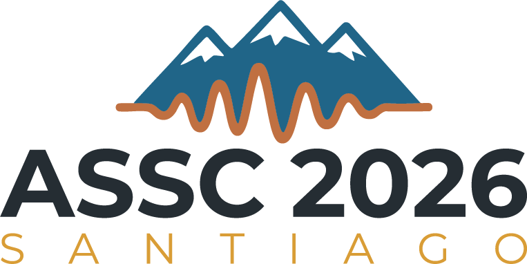
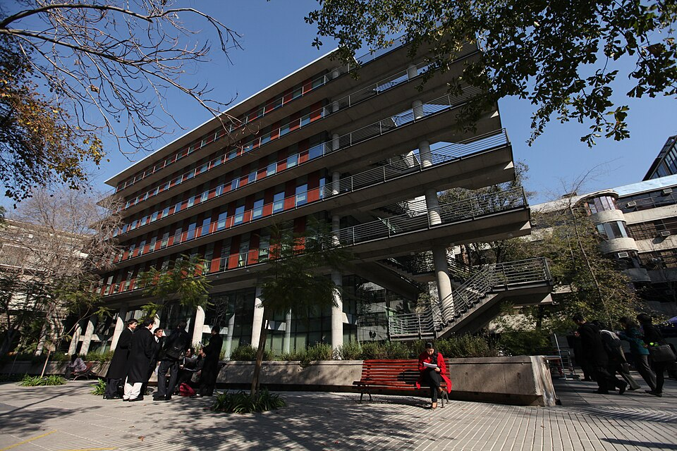

How registration works
Free, but places are limited and assigned on a first-come, first-served basis.
ASSC 2026 Satellite Event

Satellite of ASSC 29 Linked to the annual meeting of the Association for the Scientific Study of ConsciousnessAbout the Event
This ASSC 2026 satellite event is designed to initiate the formation of a Latin American Society for the Scientific Study of Consciousness by connecting people and turning shared interest into coordinated action.
Registration
Free, but places are limited and assigned on a first-come, first-served basis.
Venue & Programme

Sala Abate Molina, en Facultad de Ciencias Biológicas, Pontificia Universidad Católica de Chile.
Just few steps away from the Venue of the ASSC
Specific room: Sala Abate Molina
See the ASSC 29 conference page View venue informationProgramme
09:00-10:30
10:30-11:00
11:00-13:00
13:00-14:30
14:30-16:30
16:30-17:00
Organizers & Contact
Rubén Herzog, Universitat de les Illes Balears, Spain
Vicente Medel, Universidad Católica de Chile, Chile
Emilia Fló, Universidad de la República de Uruguay, Uruguay
Nicolás Bruno, Paris Brain Institute, France
Camilo Miguel Signorelli, University of Copenhagen, Denmark
Claudia Pascovich, Universidad de la República de Uruguay, Uruguay
Email: la.consciousness@gmail.com